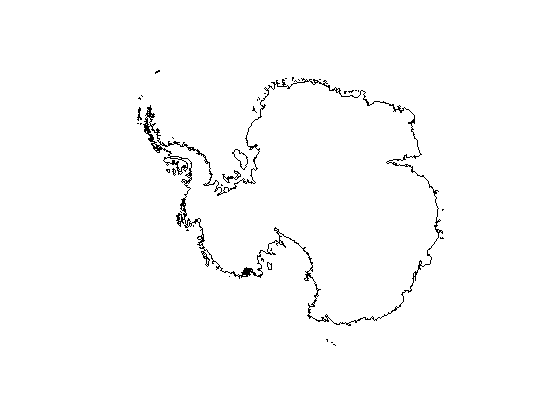
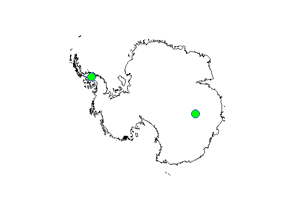
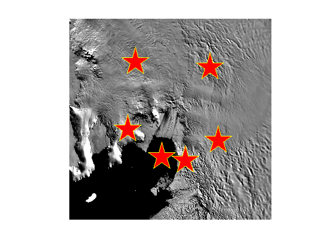
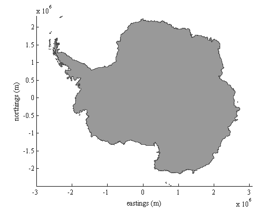

coord documentation
The coord function returns coordinates from mouse clicks. This function was written for the Antarctic Mapping Toolbox.
After calling coord, the current figure title will change to let you know you can start clicking. Here are the commands:
Mouse click: Places marker a marker and gets coordinates of the marker. Backspace: Deletes previous marker like an Undo button. + or z: Zooms in, centered on most recent click location (somewhat mediocre performance). - or x: Zooms out, centered on most recent click location (somewhat mediocre performance). Escape key: Terminates program without outputs. Return key: Terminates program with data output.
Contents
Syntax
coord
[lat,lon] = coord('geo')
[x,y] = coord('xy')
[...] = coord(,...'MarkerProperty',MarkerValue)
[...] = coord(...,'keep')
[...,h] = coord(...)Description
coord without any inputs prints coordinates of mouse clicks to the Command Window in a two-column format,| [lat lon]| or [x y]. Coordinates have the units of the current axes unless 'geo' or 'xy' are specified.
[lat,lon] = coord('geo') specifies that you want outputs in geographic coordinates, even if you are clicking around on a polar stereographic x/y map.
[x,y] = coord('xy') returns coordinates in polar stereographic (ps71) coordinates.
[...] = coord(,...'MarkerProperty',MarkerValue) specifies marker properties for when you're clickin' around on the map.
[...] = coord(...,'keep') prevents coord from automatically deleting markers upon exiting the user interface.
[...,h] = coord(...) returns a handle h of any plotted markers.
Example 1: With the Matlab's Mapping Toolbox
Get some coordinates from clicking around in map coordinates. Below I'm initializing a map with bedmap2 then I'll click once on the Antarctic Peninsula and a second time in East Anarctica:
bedmap2 gl [lat,lon] = coord % (<--click around on the map and press enter when you're satisfied)
lat = -70.7163 -74.3492 lon = -64.8115 102.6875
By default, the markers disappear after hitting Enter, but you can see from the coordinates that I clicked here:
plotm(lat,lon,'bo','markersize',16,'markerfacecolor','g')
Example 2: Also with Matlab's Mapping Toolbox:
This example is a little more involved. Return polar stereographic coordinates, make the makers large red pentagrams, and use the 'keep' option to retain the markers upon hitting Return:
modismoa 'pine island glacier' [x,y] = coord('xy','marker','p','markerfacecolor','r','markersize',50,'keep')
x = 1.0e+06 * -1.6807 -1.4994 -1.6992 -1.6164 -1.5594 -1.4794 y = 1.0e+05 * -1.4216 -1.5502 -3.0635 -3.7347 -3.8204 -3.3350
Example 3: No Mapping Toolbox Required:
If you start in polar stereographic meters, coordinates are automatically returned in polar stereographic meters unless you specify 'geo':
figure bedmap2('patch coast','xy') xlabel 'eastings (m)' ylabel 'northings (m)' [x,y] = coord
x =
1.0e+06 *
-1.5134
-1.6542
-1.3304
y =
1.0e+05 *
1.7441
-0.2266
-0.2266
 Alternatively, specify 'geo' and click on the very same map get geo coordinates:
[lat,lon] = coord('geo')
lat = -76.0947 -75.1085 -77.4069 lon = -85.5378 -91.7898 -92.1199
Author Info
This function was written by Chad A. Greene of the University of Texas at Austin's Institute for Geophysics (UTIG) in November 2015.